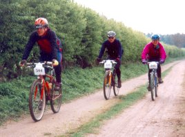
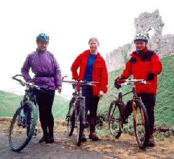

It was very foggy as Sue, Neil and I drove up to Norfolk. A good sign, we thought, as usually when the day begins foggy, it's sunny after the fog burns off.
We were heading to Castle Acre to ride the 100k Roman Roads Audax. The route (which is actually around 72 miles long) is about 2/3 off-road, taking in a variety of bridleways, byways, and quiet lanes in mostly-flat Norfolk. It is something of a tradition for the Cambridge group I ride with. Sue and Neil have done it for the past 4 years. I tried it for the first time last year, but I didn't finish. My partner and I did the first third of the route, and then, disheartened by the rain and cold, we headed straight back to the start. We still got in a 50 mile ride, but I was disappointed at not having completed the ride. This year, I vowed I was going to finish, no matter what.
And it looked like finishing would be no problem. It was bright and sunny as we unloaded the car and rode to the headquarters. We met Peter (another Cambridge guy) at the sign-in, and we soon had our numbers zip-tied to the front of our bikes. I wished I'd brought along the dark lenses for my cycle shades. Oh well, at least the orange ones I'd brought would cut out some of the glare.
We headed out, and it was soon obvious that I wasn't as fit as my companions. As we rode along the gap between them and me gradually widened. They sometimes waited up for me, but usually I would catch them up when they stopped to check the directions (which they did very seldom, as Neil knew most of the turns) or to eat a cereal bar. At least I didn't slow them down too much.
|  |
| A good start to the ride |
There was a control point at about 7 miles, where they stamped our brevet cards (you have to have the complete set of stamps to show you have done the entire route). I did the first of my many calculations. I thought: 1/10 of the way along!
I was feeling quite warm. I had a lightweight waterproof on, and all the zips were undone and the sleeves pulled up to my elbows. I depated taking it off, although (not having room in my small bum bag) I'd have to tie it around my waist.
But the clouds rolled in, slowly, gathering strength. I hoped and prayed that the rain would hold off. Waterproofs never seem to keep me dry: if I zip them completely up so that no water trickles in, I get wet from sweat. Now I don't really mind getting wet, but I do mind getting cold. On a ride of this length, I'd have to stop occasionally, and I cool off when I stop.
The raindrops started. I sighed and pulled down the sleeves of my jacket. The others put on their waterproofs. I was glad I'd decided on orange lenses after all.
When we reached 15 miles, I congratulated myself for having done 1/5 of the ride. We rode on, the damp sandy soil resisting our wheels. We got wet, and whenever we stopped we got cold. My knees were feeling especially uncomfortable, despite the long tights I was wearing. At least my feet were warm and dry, thanks to my water-shedding Shimano downhill boots. At about 19 miles, I cheered myself with the thought of 1/4 of the ride done.
The 1/3 point passed without much celebration: I was getting hungry, and I was looking forward to the second control point at a cafe, where I could have some fish and chips. The rain stopped but I was still wet. We got to the sea and rode along a deeply sandy road parallel to the coast. We fishtailed wildly here but somehow managed to keep all our bikes upright. Then we came out in Hunstanton. We pedalled easily through the town to get to the cafe, only to find no bikes there when we arrived.
Something was surely wrong, as people usually stop for a relaxed lunch there. We checked the directions and found that the control point had been moved this year. We retraced our steps and arrived at a bike shop called Fat Birds Don't Fly. The shop owners welcomed us, inviting us to bring our bikes through the shop to their back yard. They offered us coffee and tea and the use of their loo. Several mud-spattered cyclists lounged around the yard, occupying scattered chairs. Not wanting to make the effort to find a cafe, Neil and Sue pulled out sandwiches. I was travelling light: my bum bag was filled with about two boxes of cereal bars, but I didn't fancy cereal bars for lunch. The shop owners suggested a nearby bakery, and I got two sandwiches there, which I consumed with gusto back at the bike shop with some tea.
As we finished eating Sue noticed that she had a puncture. I was quite chilled by now, so Peter and I headed out at a slowish pace, knowing that they would catch up soon. Peter easily got ahead of me and waited at the turns while he checked the map and instructions.
A couple of miles out of town we went through a nature reserve. It is normally closed to cyclists, but is open to us for this event alone. Another biker had caught up to me just as I entered the reserve. There was a gate across the entrance, and a small path off the side going around it. I managed to flub it up, going a bit too quickly, and I had to put my foot down. Right in front of the other biker. How embarrassing.
The other guy passed me, but as it started raining again, he stopped to put on a waterproof. He caught up with me just as I was leaving the reserve. This time I was very careful going round the gate: I didn't want to screw up twice in a row!
Sue and Neil caught up with us soon after, while Peter was checking the map, and we took off after them, soon leaving the other cyclist behind. The rain continued. I passed the halfway mark. I began to feel a bit more cheerful. My legs, shoulders, and lower back were aching a bit, but I was doing it, although a bit more slowly than my fellow riders. I knew I had enough in me to make it to the end. I was going to finish this time.
After a while Neil stopped for a cereal bar, and I continued on, knowning that they'd catch me soon. I saw some walkers coming out of a side path, and they asked me what was going on: was this a race? I tried to explain briefly the Audax idea: that you had to get to a set of points within given time bounds, but the times were such that you could be pretty slow and still make it. As I wondered which way to go they told me that all the other cyclists were going down the track they had come out of. So I went down that track.
The other cyclist who had been going through the reserve with Peter and me had caught up, and we chatted for a bit. Soon the rest of the group caught up with me, so I picked up my pace in an attempt to match their speed, and left the other biker behind for good.
After a few very minor ups and downs, we went on a long, shallow downhill. It was a double track formed by vehicle wheels. It would have been great in the dry, but now there was water running down the tracks. The grass in the middle was squelchy, so I rode in on one of the tracks. My front wheel threw up plumes of water, and no matter which way I positioned my feet, most of the water landed on the front of my legs, just above the boots. From there it ran straight down into the boots. For the first time since I started, I had cold wet feet.
At the bottom of the hill, a small stream ran across the track, forming a small pond. I had no idea how deep it was (it looked deep), and I had no desire to cycle across it. Off to the side three slabs of rock had been laid down over the stream. The slabs were spaced slightly apart, with just about a bicycle wheel's distance between them. I didn't trust my abilities to guide the bike across the wet stones after 50 miles of cycling, so I walked across.
Then we were in North Creake, the second major control point. In past years this had also been at a cafe, but this time a guy sat in a car and stamped our brevet cards. We didn't even have any hot tea, and it was still raining. This was a real downer. We ate a couple of cereal bars and quickly got underway again, joined by Alister, a friend of Sue and Neil's whom we'd caught up with at the control point. As we cycled along, my feet slowly warmed up. They were still soaked, but the waxy leather construction of the boots prevented evaporative cooling, and the water warmed up. I felt a bit like I was in a wetsuit, but better to be warm and wet than cold and wet.
Soon after this, Neil got a puncture, and he and Sue stopped fix it, while Peter, Alister and I went ahead. Alister knew the way, so we followed him. After passing a sandy section which offered many opportunities for a minor crash, Neil and Sue joined us again. We consumed more cereal bars and were on our way.
We stopped for a snack break in a little village. There was a shop nearby. I felt that I needed a big shot of calories, so I bought and ate a Mars bar. I don't particularly like them, but I think my body appreciated the influx of sugar. I also bought some bottled water, since I was almost out. The sun had come out, so although I was wet I had hopes of drying out. Neil treated himself to a pair of warm dry gloves that he pulled out of his capacious bum bag.
After a few more miles, we were finally at the Peddars Way. This is a long Roman Road which went straight for about 12 miles back to Castle Acre. As I had been feeling guilty about making the rest of the group wait for me, I invited them to go on ahead. I knew that there were tables at the headquarters in Castle Acre, and there would be tea and cakes, so they'd be warm and dry while waiting for me. They protested, but I told them that I was fine to go on on my own. So they headed off at their own speed and were soon out of sight.
I looked down at my cycle computer, wondering how much longer I had to ride. It said I was going 0.0 mph! Hmmmm. I stopped to check it out, but I couldn't see anything obviously wrong with it. A couple passed me, asking if I was all right. I told them that I was just fiddling with my bike computer. I assumed that the sensor or magnet had been knocked around, but since I didn't remember where they should be relative to each other, I didn't try realigning it. I gave up and pedalled on.
I felt the need to have some way to gauge my progress. My computer told me I had gone 58 miles, so there were no more than 14 miles to go. Usually when I ride off-road I go at about 10 mph, so I estimated that it would take me less than one and a half hours to get back to Castle Acre. It was 4pm, so I'd be back by 5:30. So I watched the clock as it slowly advanced, and watched the ground roll under my wheels.
My lower back began to ache full time. I found that stretching relieved the pain temporarily, so I kept finding excuses to stop the bike and stand up and stretch. I need a drink of water. Gosh, isn't this a nice view. What was that bird? I really need to pee, that hedge looks appropriate.
|  |
| Tired riders at the end (Sue, me, and Neil) |
Strangely, no one passed me after the couple who went by as I was inspecting the computer. I must have gone at least 10 miles without seeing a soul. I found this pretty amazing, as I was going very slowly and taking lots of little pauses. And I'm sure I wasn't the last to come in!
Finally I came out on a road. From there I knew it was a short distance to Castle Acre. A sign soon confirmed that I was only a couple miles from the end. I rode into town, arriving at about 5:15pm, and found the gang at the headquarters. I handed in my brevet card and joined them for tea and cakes (15p for a cup of tea, and 20p for a slice of cake). We talked about the ride for awhile, and then, when I was sufficiently recovered, we left for the car. It was raining lightly. We loaded up the bikes and drove back to Cambridge.
Epilogue: The next day I ached a great deal in the morning, but the aches faded over the day, and by the evening I felt fine. I washed my bike and put it back together (reattaching the wheels and pedals), in the process discovering that the front tire was flat. I took the old tube out and found two thorns in the tire, which I removed. When I went to put in my spare tube, I found that it was the wrong size. It was a 700c tube! I'm just glad the thorns didn't deflate my tire while I was on the ride. I did have some patches with me, but changing a tube is always much easier.
I fixed the computer by getting out the instructions and realigning the magnet and pickup. It seems that both had moved. So indeed it wasn't broken.
More ride stories